文化 Cultures
当然，格拉里昂的世界不仅仅是它的地缘政治边界和荒野地区。是居住在这些国家的人们和潜伏在荒野中的生物为这个世界带来了活力。
人类各民族 Human Ethnicities
格拉里昂的内海大陆周围的人类有各种各样的民族。其中许多民族的渊源可以追溯到很远的土地，但最终各种各样的族群来到了内海地区。人类角色无论家乡在哪，都可以是下述任一民族。
下列民族出身的角色，如果来自内海，都会说通用语。同时部分民族满足一种地区语言或罕见语言的获取条件（第65页）。半精灵和半兽人出现在所有人类民族中，他们具有这些民族和其非人父母的特征。
伽伦德人 Garundi
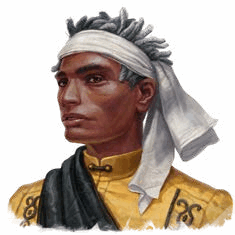
伽伦德人遍布内海沿岸的伽伦德北部国家，他们的氏族以力量和同理心，以及用慈悲和尊重对待邻居而闻名。他们的肤色通常从深棕色到米色，他们有高大的身材、宽厚的肩膀和高耸的颧骨。伽伦德人可以获得奥西里昂语。
珂莱士人 Keleshite
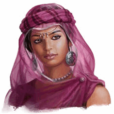
珂莱士人起源于东部沙漠中的珂莱士帝国，他们通常有黑色的头发，棕色的眼睛，以及深褐色到冷褐色的皮肤。他们文化中以帝国遗产为荣，看重魄力、机智和华贵。流行款式倾向于使用流动般的织布、头饰和头巾。珂莱士人可以获得珂莱士语。
凯利德人 Kellid
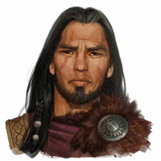
在阿维斯坦北部的群山和草原上，凯利德人在与野外的威胁的对抗中艰难求生，他们对魔法保持着警惕态度，依靠技巧和力量来狩猎和战斗。他们通常很彪悍，黑色头发，古铜色的皮肤，眼睛通常是黑色、蓝色或灰色。凯利德人可以获得哈利特（Hallit）语。
芒吉人 Mwangi
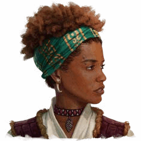
芒吉人分布在广袤的加隆德大陆上，从北部干旱的沙漠到芒吉莽原的茂密丛林，芒吉人可以划分为四个不同亚群：巴克雅尔（Bekyar）、博诺瓦（Bonuwat）、毛克希（Mauxi）和桑吉（Zenj）。芒吉人的肤色从黑色到深褐色再到赭色，他们有黑色或深褐色的头发。芒吉人可以获得芒吉语。
奈多人 Nidalese
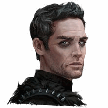
奈多人源于一个在星陨毁灭中幸免于难的文明。在流星群分割出内海时。古代奈多人为了得救，向一个邪恶影神宣誓效忠，从那时起，宗-库森的影响就一直污染着这些人。奈多人肤色倾向于灰色、灰暗，有白色、灰色或黑色的头发。奈多人可以获得阴影语。
休盎提人 Shoanti
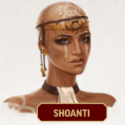
很久以前，被称为夸（quahs）的休盎提部族被赶出了瓦瑞西亚国家的繁盛土地，进入到斯托瓦尔高原（Storval
Plateau）的严酷坏境。他们顽强不屈，发誓有朝一日要夺回他们失去的东西。休盎提人的肤色通常从深褐色到赤褐色，通过剃光头和传统纹身可以轻易辨别夸族成员。休盎提人可以获得休盎提语。
塔尔多人 Taldan
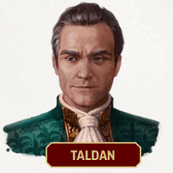
作为工匠、学者和士兵而闻名的塔尔多人遍布了整个阿维斯坦，因为塔尔多帝国曾经几乎横跨半个北方大陆。塔尔多人通常有棕色的头发，苍白到深铜色的皮肤，以及绿色、灰色或琥珀色的眼睛。他们的母语塔尔多语被非常广泛得使用，因此也被称为通用语。
天州人 Tian
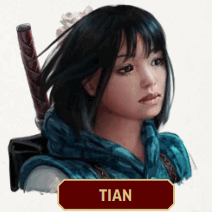
在内海地区，天州人的数量很少，他们最初来自世界另一端天夏大陆的各种国家。他们通常有一头黑发，但体型、肤色和眼睛颜色差异很大，因为"天族"这个术语可以描述多个民族。天州人可以获得天州语。
乌尔芬人 Ulfen
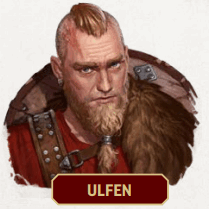
乌尔芬部落的海边劫掠者们都是熟练的水手和保镖。他们通常身材高大，皮肤从苍白到红润，有金色、浅棕色或红色的头发。他们通常用毛皮、牛角和象牙来装饰，以表明对自己外表的自豪。乌尔芬人可以获得斯伽德（Skald）语。
瓦瑞西亚人 Varisian
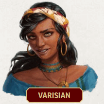
历史上，瓦瑞西亚人喜欢过着游牧的生活。但现在许多人就定居于像是乌斯塔拉夫或者与他们同名的瓦瑞西亚这些地方。他们的肤色通常从黄褐色到暗绿色。他们的头发颜色各种各样，从白金色到红色再到棕色。他们的大大的、充满感情的眼睛甚至有紫罗兰和金色等罕见颜色。瓦瑞西亚人可以获得瓦瑞西亚语。
伏陀罗人 Vudrani
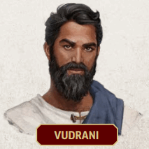
伏陀罗帝国虽然远在东方，但在内海的扎摩诔岛有立足之处。伏陀罗广泛信仰着轮回转世，这使得专注于自我完善成为伏陀罗文化的标志。伏陀罗人通常有一双黑眼睛，肤色从赭色到茶色。他们的头发通常为黑色，有不同的厚度和纹理。耳洞、珠宝和化妆是伏陀罗人常见的装饰物。伏陀罗人可以获得伏陀罗语。
矮人 Dwarves
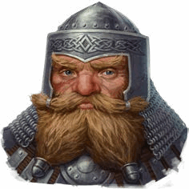
无数个世纪以来，矮人一直居住在幽暗之地的无光之处。直到星陨后，矮人进行了传说中的"寻天宏愿"，在此期间，绝大部分的矮人进行了朝圣之旅，移居到了格拉里昂的地表。在此过程中，他们不仅将兽人赶到了地表，而且还在他们出现的每个地方建立了几个巨大的天空城堡。矮人现在主要有三个民族，每个民族都与三个海拔范围中的一个有关：格朗达森矮人（仍然居住在幽暗之地的上层），厄加森矮人（传承最广泛，居住于地表世界或邻近地表的矮人），以及霍尔达森矮人（人口最少的矮人，只居住在最高的山区）。
精灵 Elves
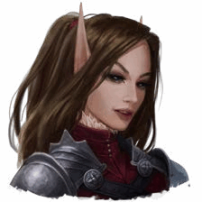
精灵最初的家园并不是格拉里昂世界，但现在居住在这的精灵被看作是这个星球的原住民。这些精灵最早是通过被称为艾悠达拉（aiudara）的传送门网络从邻近的卡斯卓韦（Castrovel）星球来到格拉里昂。虽然在星陨后，精灵们在几千年间放弃了格拉里昂，但他们后来又大量返回。人口最多的精灵是艾乌登（aiudeen），他们已经适应了温带森林的土地。他们是统治奇奥尼的精灵，也是在其他社会中最常遇到的精灵。在南边，穆拉里耶（Mualijae）精灵已经适应了芒吉莽原（Mwangi
Expanse）的炎热丛林，而在北边，伊尔维拉尼（ilverani）精灵（有人称为雪铸者）居住在伊利森（Irrisen）和世界之冠的冰冻地带。加伦德沙漠中的沃里诺（vourinoi）精灵是最神秘的精灵民族。
侏儒 Gnomes
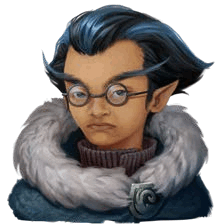
第一批侏儒在星陨后某个时间点，从被称为第一世界的另一次元来到格拉里昂，以此逃离了一种很少有人能回忆起其本质的恐怖。从那时起，侏儒已经完全转变为到物质位面的生物，但他们仍然生活在对被称为漂白症的生命威胁的恐惧中。精童侏儒是最普遍的。闪光侏儒与第一世界维持了更紧密的联系，而其他被称为堕落侏儒的人则拥抱了精类传承中更黑暗的传统。敏思侏儒（被戏称为
"酸味侏儒"）则试图通过探索新的发明，而不是寻求新的经历或探索世界来避免漂白症。
地精 Goblins
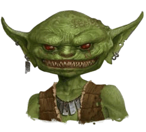
尽管许多冒险者可能会认为地精就是地精，但这些精力旺盛而富有创造力的族群就像任何其他族裔一样多样化。最普遍的是锉刀地精，因为其一般大量居住在瓦瑞西亚西海岸崎岖的海岸线上，而这个地区被称为锉刀（Rasp）。森林地精往往比其他民族要少，主要分布在阿维斯坦中部。他们数量刚刚在地精血战的恐怖后开始恢复。伊利森永冬的冰霜地精在地精中最为不寻常，因为他们有在身上长出蓝色毛皮的倾向，而梅迪奥伽尔提（Mediogalti）岛的猴子地精则以他们适合抓握的尾巴和树栖而闻名。
半身人 Halflings
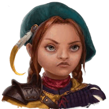
许多半身人自记事起就生活在其他社会的阴影下，他们的生活方式与邻居文化基本相同，并随着时间推移或需要而加入他们自己的独特变化。然而，在其他民族和国家的背景外，存在着许多独特的半身人文化。在某些情况下，这些划分是由隔离和环境助长的，例如切里亚斯受压迫的半身人被迫成为奴隶，以及芒吉莽原的桑讴（Song'o）半身人，他们避开其他文化以避免重蹈类似的命运。其他半身人，如雅里奇（jaric）、米赫里尼（mihrini）、奥托班（othoban）和乌拉姆（uhlam）半身人，他们在没有人类和其他生物的影响下形成了自己的传统。
地区语言 Regional Languages
这些语言在其发源地区之外是罕见。来自下列地区之一的角色自动满足该地区语言的获取条件。在内海地区，规则中其它地方称为通用语的语言就是塔尔多语--这是塔尔多对整个地区的控制和影响的结果。这里列出的每一种语言几乎都在艾巴萨罗姆的“大熔炉”中使用
表8-1：地区语言
| 语言 |
地区 |
| 哈利特语（Hallit） |
伊利森, 蒙蒂维, 纽梅利亚, 猛犸象大王之国, 萨柯里斯, 乌斯塔拉夫 |
| 珂莱士语（Kelish） |
卡塔佩什, 珂莱士, 奥西里昂, 卡蒂亚 |
| 芒吉语（Mwangi） |
芒吉莽原, 镣铐群岛, 苏比亚, 维德瑞安 |
| 奥西里昂语（Osiriani） |
盖布, 卡塔佩什, 法力废土, 奈克斯, 奥西里昂, 拉哈杜姆, 苏比亚 |
| 休盎提语（Shoanti） |
贝尔克泽恩, 瓦瑞西亚 |
| 斯伽德语（Skald） |
伊利森, 林诺姆诸王国 |
| 天州语（Tien） |
林诺姆诸王国, 猛犸象大王之国, 天夏 |
| 瓦瑞西亚语（Varisian） |
布雷斡, 死坟末土, 奈多, 涅玛萨斯, 乌斯塔拉夫, 瓦瑞西亚 |
| 伏陀罗语（Vudrani） |
扎摩诔, 卡塔佩什, 奈克斯, 伏陀罗 |